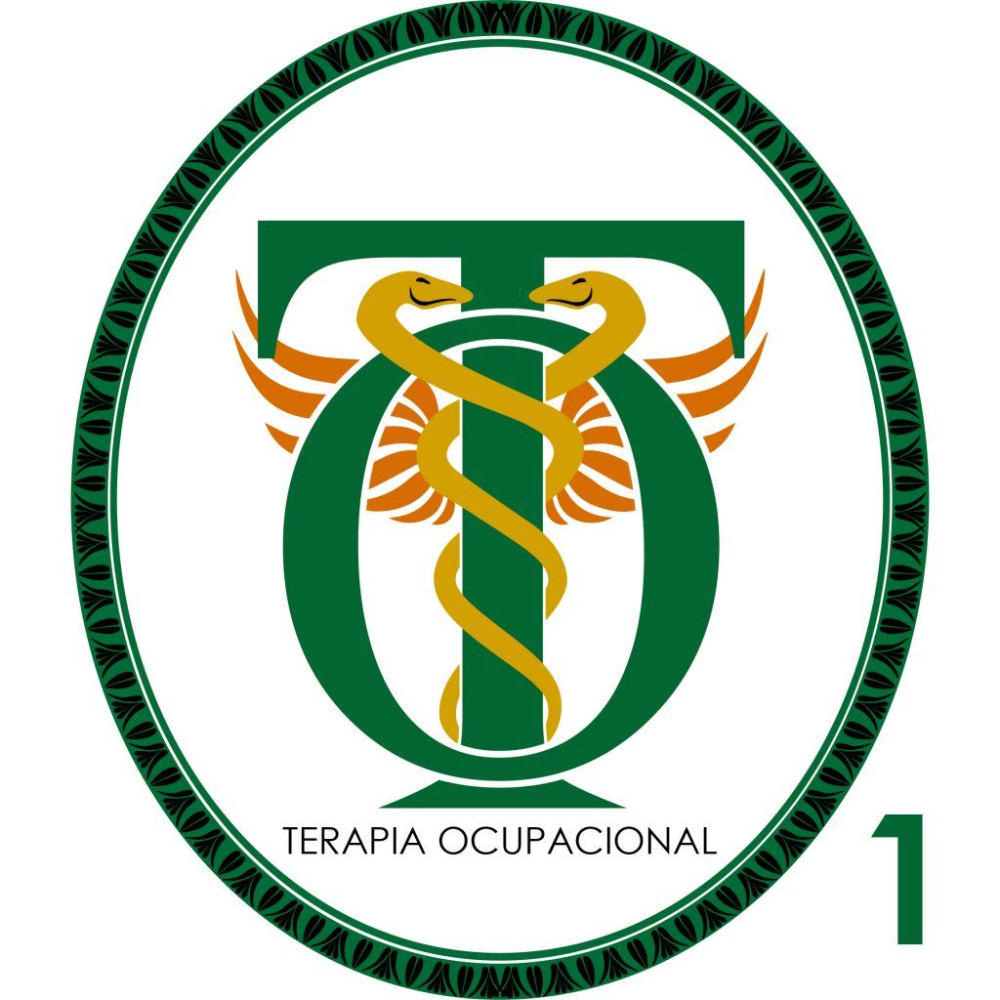
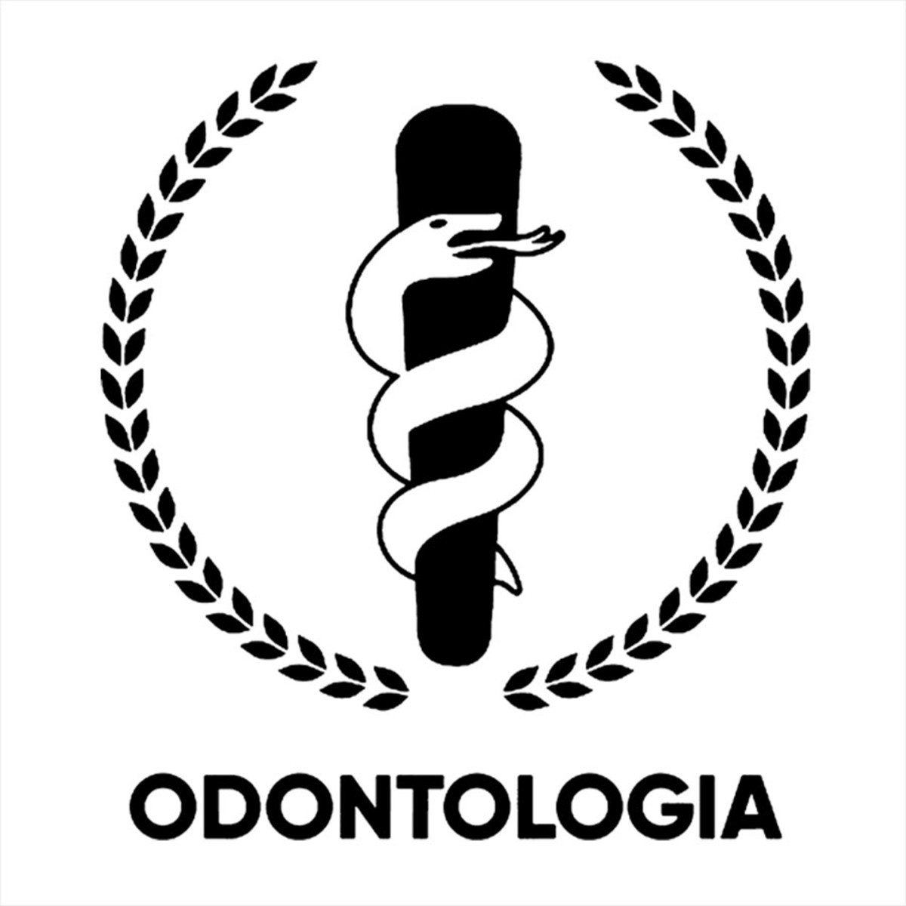
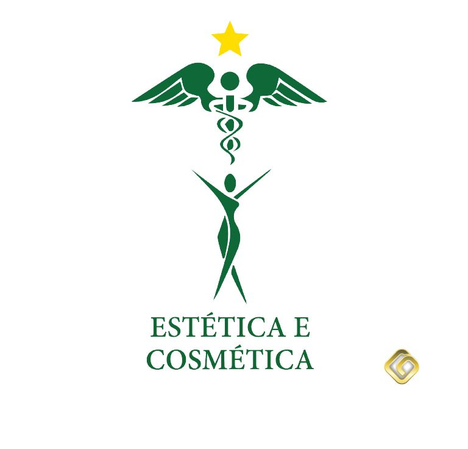
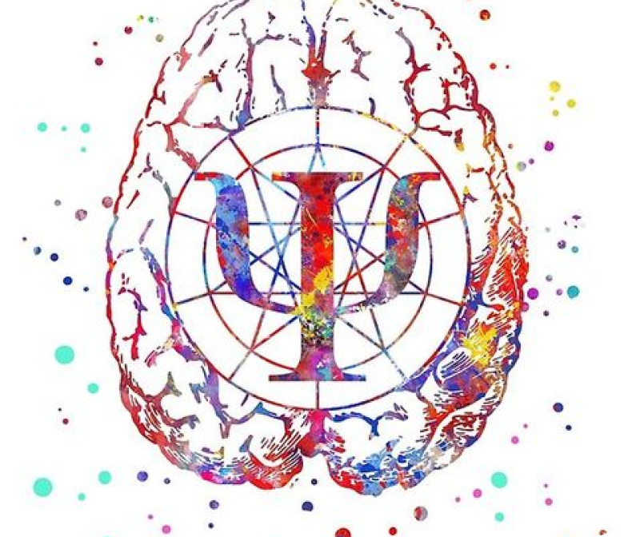
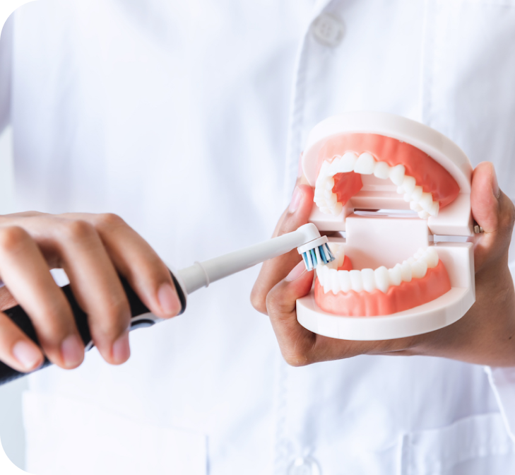

Universidade Federal
do
Paraná(UFPR)
Ciências
da
Saúde

Ciências da saúde
As Ciências da Saúde cuidam tanto do indivíduo como das populações, tanto humanas como animais. Envolvem a parte clínica, de atendimento a doentes, tanto na medicina, como na veterinária, enfermagem, fonoaudiologia, farmácia, educação física, odontologia, nutrição e fisioterapia. Incluem também a pesquisa em saúde, tanto básica como aplicada.
Cursos
Medicina
Medicina é o campo do estudo responsável por investigar e estudar a origem e causas de doenças humanas, visando chegar a uma cura, tratamento e prevenção da doença, ou até mesmo o seu avanço.
Psicologia
Psicologia é a área da ciência que estuda a mente e o comportamento humano e as suas interações com o ambiente físico e social.O objetivo da psicologia é diagnosticar, explicar e orientar a mudança de comportamentos humanos.

Terapia Ocupacional
É uma profissão voltada à prevenção e tratamento de indivíduos com alterações cognitivas, afetivas, perceptivas e psicomotoras, decorrentes ou não de distúrbios genéticos, traumáticos ou doenças adquiridas.

Odontologia
Odontologia é a área da saúde que estuda e trata do sistema estomatognático compreende o crânio, a face, pescoço e cavidade bucal, abrangendo ossos, musculatura mastigatória, articulações, dentes e tecidos.

Estética e Cosmética
A área de estética e cosmética tem como principal objetivo atuar nos cuidados com o corpo. Entre suas aptidões estão limpeza de pele, hidratação, massagens e harmonização facial.
Enfermagem
O enfermeiro atua na prevenção, recuperação e reabilitação da saúde do indivíduo e da comunidade. No dia a dia do profissional, o enfermeiro é responsável por assumir atividades voltadas à prestação de cuidados na área da saúde, em quadros das mais diversas complexidades.
Medicina
Perfil de Estudante:
As principais características que o estudante de medicina deve ter é: - ser planejado e disciplinado; detalhista; - ter equilíbrio emocional; - cuidar da própria saúde; - ser flexível quanto aos horários; ter empatia e saber se relacionar com as pessoas.
Mercado de Trabalho:
O profissional de Medicina tem amplo mercado de trabalho. Ele pode atuar em hospitais, clínicas e consultórios particulares. Também pode trabalhar em áreas mais específicas, como medicina legal e medicina do trabalho. No Brasil.
Média Salárial:
De acordo com a Federação Nacional de Médicos(FENAM), em 2022, o piso salarial de um médico, para jornada de trabalho de 20 horas semanais, é de R$ 17.742,78..
Psicologia
Perfil de Estudante:
Capacidade de empatia; Não ter preconceitos; Gosto por leitura; Perfil analítico; Habilidades de persuasão e sinceridade;
Mercado de Trabalho:
No setor público, onde ele atua em hospitais e postos de saúde, a demanda é constante, assim como na área jurídica.O psicólogo também continua requisitado nos setores de recursos humanos das empresas, onde pode fazer treinamentos, atuar como recrutador e até gerenciar o departamento.
Média Salárial:
No cargo de Psicólogo se inicia ganhando R$ 1.953,00 de salário e pode vir a ganhar até R$ 3.619,00. A média salarial para Psicólogo no Brasil é de R$ 2.660,00..
Terapia
Ocupacional
Perfil de Estudante:
Saber trabalhar em equipe; Ser dinâmico; Saber se posicionar e tomar decisões; Ser proativo; Ter ética e responsabilidade;
Mercado de Trabalho:
Esse profissional pode encontrar trabalho em clínicas de reabilitação, asilos, hospitais, centros de saúde, creches, ambulatórios, casas de repouso, escolas (públicas e particulares), penitenciárias e até em projetos sociais..
Média Salárial:
O salário médio é entre R$ 1.500,00 e R$ 2.600,00, sendo que esse valor altera de acordo com a instituição em que você atua.
Odontologia
Perfil de Estudante:
O perfil ideal para um estudante de odontologia exige muita calma , ter equilíbrio emocional e muita ética. Também ter a sensibilidade para compreender nos problemas do paciente e saber intervir. E também muita concentração e disciplina.
Mercado de Trabalho:
Existe sempre a possibilidade do dentista abrir um consultório próprio, atendendo clientes de acordo com sua especialização. Também é possível atender em uma clínica particular em parceria com outros profissionais. Em ambas as alternativas.
Média Salárial:
O salário médio é entre R$ 1.500,00 e R$ 2.600,00, sendo que esse valor altera de acordo com a instituição em que você atua.
Estética
e
Cosmética
Perfil de Estudante:
Uma das características mais importantes é gostar de pessoas. Pois, o profissional da área lidará com pessoas o tempo todo e saber ouvir é uma qualidade muito valorizada.
Mercado de Trabalho:
O profissional formado em Estética e Cosmética encontra oportunidades de emprego em salões de beleza, centros de estética, clínicas, academias, SPAs, resorts, indústrias que fabricam produtos ou acessórios de beleza, centros médicos e hotéis.
Média Salárial:
No início de carreira ele pode receber entre R$ 1.200,00 e R$ 2.400,00, já que não há um piso fixo para atuação no setor. Mas, com mais tempo de carreira e reconhecimento profissional, um farmacêutico cosmetologista pode ganhar até R$ 30 mil..
Enfermagem
Perfil de Estudante:
Equilíbrio emocional; Comprometimento; Segurança para atuar sob forte pressão; Proatividade; Empatia; Facilidade de comunicação; Trabalho em equipe; Ética profissional; Apreço pelas causas sociais; Prudência nos procedimentos;
Mercado de Trabalho:
Os enfermeiros podem atuar em quase todo o setor hospitalar, instituições de saúde, clínicas e no acompanhamento domiciliar de pacientes. Outra possibilidade é prestar serviços para planos de saúde, laboratórios e projetos da administração pública.
Média Salárial:
A média salarial brasileira para o cargo de enfermeiro é de R$3.136,50. Os melhores salários médios estão nos estados de Mato Grosso do Sul, São Paulo e no Distrito Federal.
Principais Faculdades de Medicina


Universidade
de
São Paulo(USP)

Universidade Federal
de
Viçosa(UFV)
Como são as Faculdades?
Faculdade de Medicina
A graduação em Medicina têm duração de 6 anos, os dois primeiros anos do curso são destinados aos assuntos básicos e introdutórios da área de saúde, enquanto o terceiro e quarto ano de estudos são dedicados aos conhecimentos clínicos da medicina. Já nos dois últimos anos, os estudantes são envolvidos na prática clínica.

Faculdade de Psicologia
A faculdade de Psicologia promove o desenvolvimento de habilidades e técnicas voltadas para o entendimento de pacientes com os mais diversos distúrbios de cunho emocional.A graduação em Psicologia é um curso que oferece título de bacharel e que conta com disciplinas teóricas e práticas. O curso de graduação em Psicologia leva, no mínimo, 5 anos de duração.
Faculdade de Terapia Ocupacional
O curso de graduação em Terapia Ocupacional tem a duração de 4 anos e é composto por disciplinas da área da Saúde, como Anatomia, Fisiologia, Biologia e Pediatria, além de conteúdos da Ciências Humanas e Sociais, como Ética e Psicologia.

Faculdade de Odontologia
A faculdade de Odontologia é do tipo bacharelado e tem duração média de 5 anos. O objetivo do curso é capacitar profissionais para identificar, prevenir e tratar doenças da boca, dentes, gengivas e ossos da face. Durante o curso, o aluno aprende como aplicar técnicas e tratamentos dentários e como lidar com pacientes com necessidades especiais.
Faculdade de Estética e Cosmética
A fim de formar profissionais que atuem de forma prática e empreendedora nesse mercado, as melhores faculdades de Estética e Cosmética oferecem o curso de grau bacharelado ou tecnológico, além de haver também instituições que possuem o curso técnico na área.
Faculdade de Enfermagem
A graduação de enfermagem dura, em média 5 anos. Ao longo deste período o aluno aprende gradativamente a realizar procedimentos inerentes à profissão como atendimento de pacientes em primeiros socorros, fazer curativos, administração de medicamentos, coleta de amostras para exames, além de auxiliar os médicos em procedimentos.